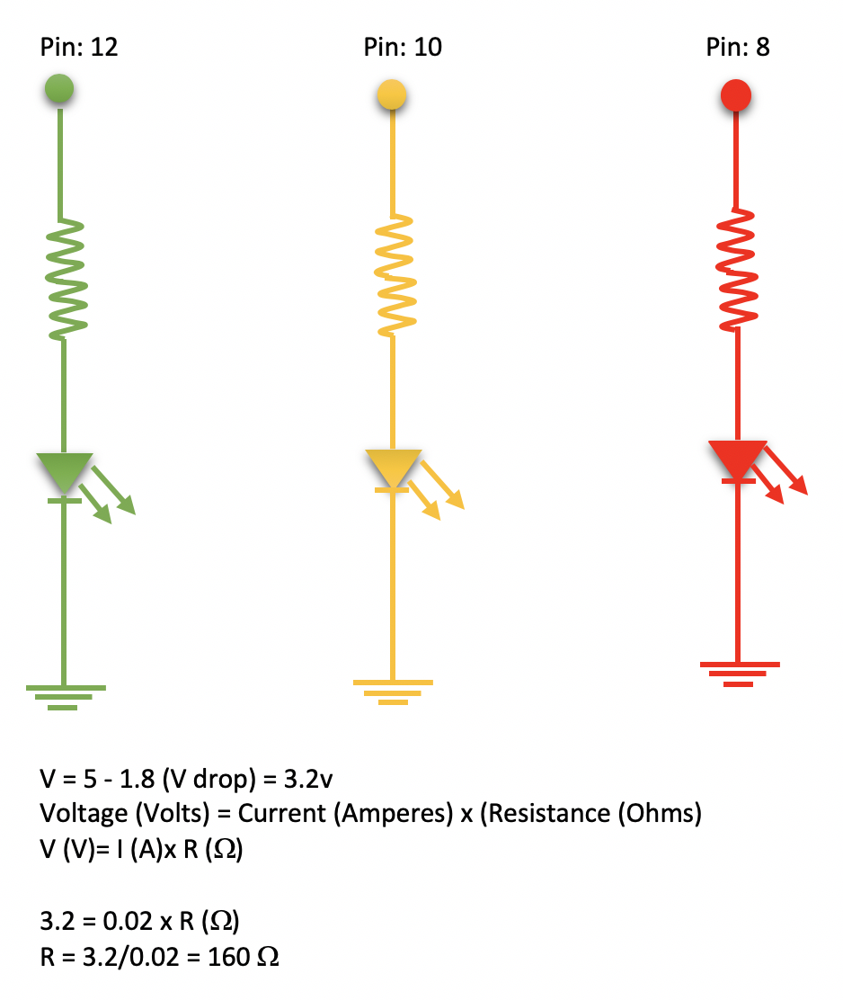
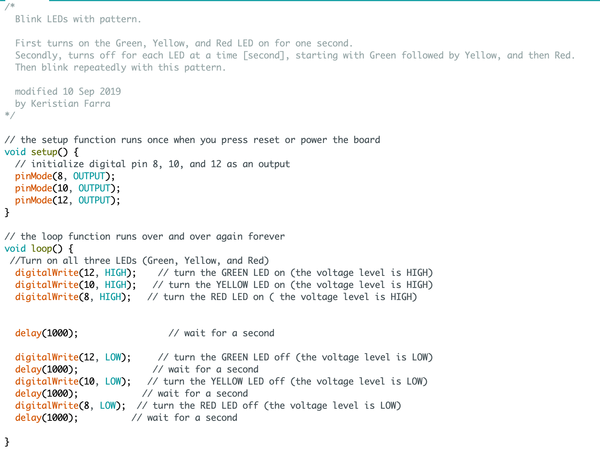

Assignment 1 : Blink !
Circuit


I used pin 8, 10, and 12 pins for the 3 LEDs circuit. I programmed the in Arduino IDE to make the LEDs blink in a pattern. The pattern was for all three LED Lights to light at once then turn off in order: Green, Yellow, and then Red. I have calcuated the resistance for each LED and then used 1kohms resistors for each LED to limit the current flowing through the LEDs.
Schematic
[Note: The calculation is the same for Green, Yellow, and Red LED]
Above is the schematic for the three LEDs. Based on the in-class blink activity, I used 1000 ohms resistor with 5V power from the Arduino board. I also used 20mA as the target and 1.8V for the drop voltage for the Green, Yellow, and Red LED.
Code
Here is the code I wrote for the LEDs to blink in a pattern. Read the comments on the code to understand how it works.